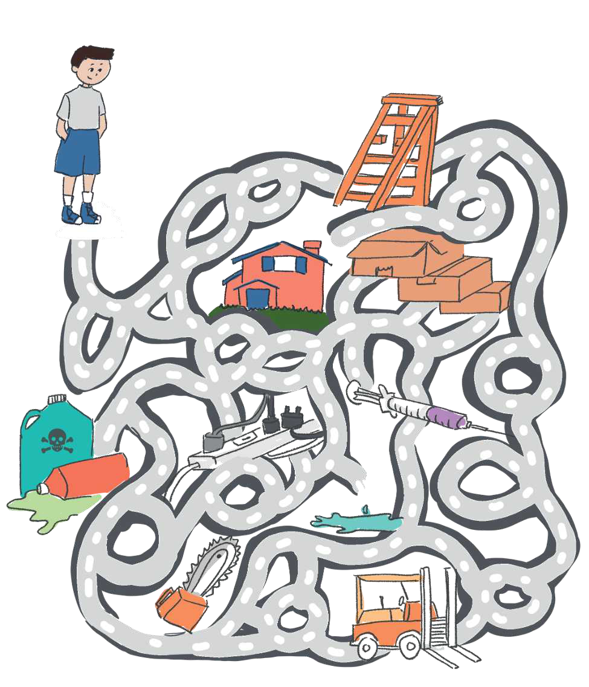

TEMATIKA 4: NJOHJA E RREZIQEVE1. Ki kujdes, Dielli!
Puno në shtëpi
Ndihmë: si të punoj?
Zgjidh të gjitha përgjigjet e sakta. Mund të zgjedhësh më shumë se një. Kur të mbarosh, shtyp butonin “Dërgo”.
1.
Ndihmoje Diellin të shkojë në shtëpi duke mos u rrezikuar nga asnjëri prej burimeve të rrezikut që has në rrugë.
Zgjidh të gjitha burimet e rrezikut që Dielli duhet t’i shmangë rrugës për në shtëpi.
